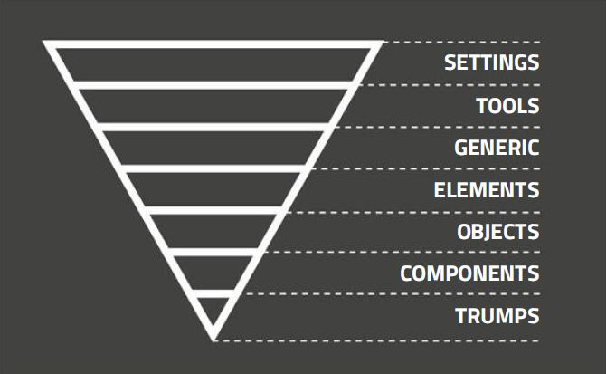
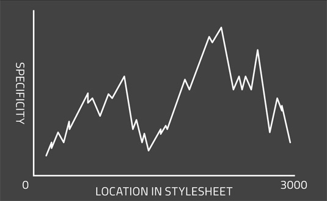
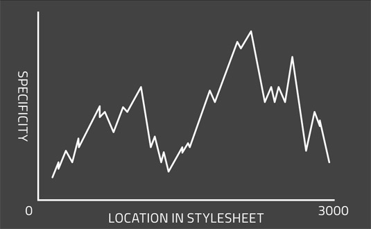

CSS structuur
Iain van der Wiel
Senior front-end developer @ E-sites
@iain_vdw
@iejun
CSS schrijven
is makkelijk
Goede CSS
schrijven is complex
Eigenaardigheden
van CSS
Cascade
Specificity
Inheritance
Source order
Waaraan herken
je complexiteit?

* verplicht kattenplaatje
Ongewenste stijling
/* Slecht */
div ul li a { font-weight: bold; }
/* Beter */
.list-link { font-weight: bold; }
Resetten van properties
/**
* Responsive table
*/
/* Slecht */
td { display: block; }
@media screen and ( min-width: 640px ) {
td { display: table-cell; }
}
/* Beter */
@media screen and ( max-width: 640px ) {
td { display: block; }
}
Te hoge specificity
/* Slecht */
#product-list .product h3 a { font-weight: bold; }
/* Beter */
.product-title-link { font-weight: bold; }
CSS Components
met behulp van:
ITCSS — BEM — OOCSS (+ mixins)
ITCSS
Inverted Triangle CSS

Wat is ITCSS?
- Dicteert source order
- Volgorde o.b.v. specificiteit
- Voorkomt verspringen door je
stylesheet door specificiteit
- Goed bestand tegen
source order aanpassingen
ITCSS - structuur
css/
├── settings/
│ ├── colours.scss
│ └── grid.scss
├── tools/
│ ├── functions.scss
│ └── mixins.scss
├── generic/
│ └── normalize/
├── base/
│ ├── forms.scss
│ └── typography.scss
├── objects/
│ ├── media.scss
│ └── grid.scss
├── components/
│ ├── main-nav.scss
│ └── article-list.scss
└── trumps/
└── helpers.scss
ITCSS - voor
 

ITCSS - na


Waarom ITCSS?
- Vermindert problemen met
source order en specificity
- Verbetert gemak onderhoud
en doorontwikkeling
- Moedigt aan tot nadenken
scheiding objects en components
BEM - Block, Element, Modifier
/**
* Product item component
*/
// Block
.product { [...] }
// Elements
.product__title { [...] }
.product__image { [...] }
// Modifiers
.product--highlighted { [...] }
.product__thumb--large { [...] }
Blocks, Elements, Modifiers
Productnaam
Beschrijving van product
€ 42,-
Voordelen van BEM
- Verdeelt styling onder componenten
- Uniforme naamgeving over hele codebase
- Relaties tussen elementen af te leiden uit HTML
- Lage specificty
OOCSS
Object-oriented CSS
OOCSS — principes
- Separate structure from skin
- Separate containers from content
Separate structure
from skin
.btn-primary {
border: 2px solid orangered;
border-radius: 3px;
padding: 6px 12px;
font-size: 1.2rem;
font-weight: bold;
background: orange;
}
|
.btn-default {
border: 1px solid limegreen;
border-radius: 3px;
padding: 5px 10px;
font-size: 1rem;
font-weight: normal;
background: lime;
}
|
Separate structure
from skin
/* Structure */
.btn-medium {
border: 1px solid;
padding: 5px 10px;
}
.btn-large {
border: 2px solid;
padding: 6px 12px;
}
|
/* Skin */
.btn-primary {
border-color: orangered;
font-size: 1.2rem;
font-weight: bold;
background-color: orange;
}
.btn-default {
border-color: limegreen;
font-size: 1rem;
font-weight: normal;
background-color: lime;
}
|
Separate containers
from content
/* Slecht */
.page h1 {
[...]
}
/* Beter */
.page-title {
[...]
}
OOCSS Mixins
/* Structure */
@mixin btn-medium {
border: 1px solid;
padding: 5px 10px;
}
@mixin btn-large {
border: 2px solid;
padding: 6px 12px;
}
|
/* Skin */
@mixin btn-primary {
border-color: orangered;
font-size: 1.2rem;
font-weight: bold;
background-color: orange;
}
@mixin btn-default {
border-color: limegreen;
font-size: 1rem;
font-weight: normal;
background-color: lime;
}
|
.btn-cta {
@include btn-large;
@include btn-primary;
}
|
OOCSS Mixins
extra voordelen
- Alle styling zit in 1 selector
- Gzip maakt korte metten met gedupliceerde properties, output is zelfs kleiner dan via @extend
- Simpliciteit van output is vele malen hoger
- Ongebruikte mixins genereren ook geen output meer
 Image credit: Smashing Magazine - Atomic Workflow
Image credit: Smashing Magazine - Atomic Workflow